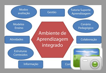
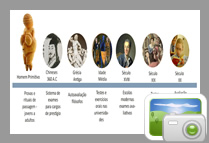
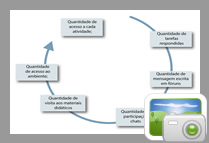
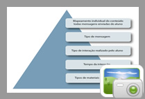

- APRESENTAÇÃO
- TÓPICO 1
- TÓPICO 2
- TÓPICO 03
- TÓPICO 04
- REFERÊNCIA
Introdução
Você viu na aula anterior o quanto as tecnologias digitais podem contribuir com o aprendizado presencial e a distância. No fazer pedagógico, é difícil separar o uso de diversos recursos e ferramentas que ajudam, dão suporte e/ou fazem a mediação entre professor/conteúdo/alunos. Antigamente, se conhecia e se aprendiam as primeiras letras em revistas e livros impressos e se exercitava a escrita no caderno, na lousa etc. Hoje, com a tecnologia acessível, o processo se modernizou. Usam-se softwares, páginas de internet, os editores de texto, e-mail, tanto no exercício da escrita, como da leitura. São muitos os suportes de apresentação, produção e interação por meio dos quais professores, tutores e alunos movimentam os conteúdos abordados.

- Conhecer os principais recursos, ferramentas e programas de computador (softwares) utilizados em educação presencial e educação a distância, assim como suas características.
- Identificar as ferramentas de organização, gestão, informação e comunicação.
- Conhecer os conceitos de avaliação e sua importância no processo de aprendizagem.
- Entender as especificidades da avaliação na EaD.
- Apresentar os principais recursos utilizados em educação presencial e a distância.
Dê uma olhada à sua volta, no polo de ensino. Observe sua sala de aula e os equipamentos e recursos que estão disponíveis. Rememore suas antigas aulase o ambiente físico. Liste o que os professores usavam como recursos em sala de aula para auxiliar na exposição do conteúdo. Pois é, você perceberá que são inúmeros suportes e ferramentas tecnopedagógicos, antigos e novos, utilizados como meio e apoio ao processo ensino-aprendizagem, na modalidade presencial e na modalidade a distância.
Os professores ou equipe pedagógica, ao realizarem o planejamento dos níveis de ensino, como exemplo a aula, tomam a decisão de utilizar recursos didáticos uma ou várias tecnologias educativas conforme ela(s) tenha(m) o potencial de contribuir para a aprendizagem do aluno, enriquecer o conteúdo e variar as estratégias didáticas, sempre no intuito de promover a eficácia pedagógica no que diz respeito a apresentar, armazenar e manipular o conteúdo didático ou informação.
Vejamos, então, que recursos são mais utilizados (assim como suas respectivas características), tanto em sala de aula presencial, quanto em educação a distância. Os diagramas a seguir apresentam um resumo dos tipos de recursos e de suas principais características, vamos conferir!
Como você pode ver, a lista de recursos é extensa. No entanto, ela não para só no que descrevemos no quadro. Pelo contrário, é crescente a evolução dos suportes eletrônicos que vêm sendo adaptados e aplicados no processo ensino-aprendizagem. Um exemplo concreto disso são os programas de aplicação que funcionam em sistemas operacionais popularmente conhecidos, tais como Windows ou Linux.

Além dos sistemas operacionais das máquinas, há também muitos softwares e,dentre eles, os aplicativos que são bastante utilizados em meio educacional. Destacam-se os mais conhecidos os processadores de texto (Word e Open Office Writer), as planilhas eletrônicas (Excel e Open Office Calc), apresentações eletrônicas (Power Point e Open Office Impress), aplicações gráficas (Photoshop, Corel Draw, Gimp), editores web (Dreamweaver, Kompozer-Mozilla) e banco de dados (Acess, Open Office Basic).Com expansão da internet e da computação em nuvem o computador se tornou um “chip” ligado a internet e com isso os aplicativos estão disponíveis e arquivados online. O que antes era só no pc e teríamos que salvar no HD da máquina. Os principais sites que oferecem esse recurso de plataforma de arquivos e os mais conhecidos são: Amazon Cloud Drive, Dropbox, Google Drive, Microsoft Sky Drive.

Como estudantes na modalidade a distância, vocês vão utilizar muitos desses recursos, seja no computador físico ou nas nuvens. Para o professor, eles também são essenciais, uma vez que o auxiliam a organizar a formação, fazer a gestão do processo ensino-aprendizagem, informar o estudante, bem como promover as interações necessárias entre professor-aluno(s), aluno(os)-tutores, aluno(s)-aluno(s), aluno(s)-instituição (equipe de apoio, suporte, etc).
No próximo tópico, então, mostraremos quais ferramentas são mais usadas em EaD e, em especial, nos ambientes virtuais tais como o Moodle, utilizado para e interação neste curso.
- Identificar as ferramentas de organização, gestão, informação e comunicação em educação a distância.
Em educação a distância, há por trás do professor e tutores, uma equipe que ajuda no planejamento, criação e suporte do cenário tecnopedagógico em que vai se dar a aprendizagem. Isso tudo para garantir que o estudante aprenda de maneira rica, eficaz e com qualidade, conforme os objetivos do curso e das disciplinas. Para isso, deve-se propiciar um ambiente virtual de aprendizagem que permita a ocorrência de todas as interações possíveis ao bom andamento do curso.
Para atender a essa demanda, foram desenvolvidas muitas
plataformas de ensino que dão suporte às atividades de educação a
distância, que podem ser gratuitas ou pagas. Essas plataformas,
também chamadas de Ambientes Virtuais de Aprendizagem (AVA)
priorizam algumas funcionalidades que devem ser usadas para
garantir que ocorram, efetivamente, as relações de comunicação, a
difusão e tratamento do conteúdo, a gestão e as interações
necessárias ao processo educativo. As mais utilizadas no Brasil são:
TelEduc, AulaNet, Amadeus, Eureka, Moodle, e-Proinfo, Learning
Space e WebCT.
Fonte: Class - 2001
Class (2001) elege um grupo de ferramentas com funções de informação, comunicação, colaboração, gestão e atividades como as mais adequadas para aprendizagem virtual. O autor observa que essas cinco funções apresentam o que é necessário para um ambiente de aprendizagem integrado e organizado (como no mundo físico, presencial), uma vez que agregam em um só ambiente virtual os elementos e funcionalidades necessárias a todos os aspectos da formação.
- As funções de INFORMAÇÃO têm como usos gerar, armazenar, veicular, processar e reproduzir a informação.
- As de COMUNICAÇÃO incluem toda forma de veicular informação, inclusive as mídias mais tradicionais, como o uso de pergaminhos, de tambores na selva, de livros, de revistas, do rádio, da TV, do vídeo, das redes de computadores, etc.
- Já as de INTERAÇÃO permitem elaboração e manipulação conjunta de conteúdos específicos por parte do emissor (professor-tutor/aluno) e do receptor (aluno/ professor-tutor), codificando-os, decodificando-os, recodificando-os conforme as suas realidades individuais e a cultura em que vivem.
- As funções de COLABORAÇÃO, por sua vez, permitem a otimização do trabalho em equipe, facilitam a colaboração, permitem a aprendizagem colaborativa, favorecem o uso de diferentes linguagens, atendem a diferentes estilos de aprendizagem.
.png) Fonte: DEAD / IFCE - 2014
Fonte: DEAD / IFCE - 2014Veja que o espaço virtual reproduz as funções e os espaços correspondentes na realidade. O ambiente virtual em que você está interagindo agora, o Moodle, possui uma forte conotação espacial e funcional, como se você estivesse em um ambiente físico de ensino da instituição. Nele você interage com os espaços onde circula a informação, a comunicação, a gestão do ensino e do conteúdo, a colaboração, as atividades didáticas e avaliativas, conforme os objetivos estabelecidos nos planos das disciplinas.
Ainda é preciso observar que, mesmo estabelecidos os espaços no ambiente virtual, é necessário o uso de diversas outras ferramentas para as tarefas de organização, gestão, informação e comunicação.
- Apresentar o ambiente Moodle;
- Descrever as ferramentas de interação do ambiente Moodle;
- Apresentar outras ferramentas que fazem parte dos cursos a distância do IFCE e suas funcionalidades.
Ambiente Virtual Moodle
Uma das habilidades que um aluno virtual deve ter é saber utilizar o ambiente virtual de aprendizagem de forma eficiente, visto que todos os processos de ensino-aprendizagem ocorrerão nesse espaço. Em vista disso, por meio de uma abordagem teórico-prática, discutiremos o que são esses ambientes, do que são compostos e quais são suas potencialidades educativas.
É importante salientar, ainda, que a educação a distância (EaD), no modelo atual, objetiva uma aprendizagem que se desenvolva coletiva e individualmente. Para a viabilização desse processo, é necessário que os cursos a distância ofereçam ambientes com ferramentas síncronas e assíncronas capazes de oferecer interatividade nas discussões, ou seja, compartilhamento de ideias entre os seus participantes. Podemos dizer que o Moodle, como ferramenta de aprendizagem, conta com uma diversidade de recursos que propiciam a vocês possibilidades de trabalhar o conteúdo e as atividades de uma maneira mais dinâmica e interativa.
O conjunto de ferramentas é dividido de acordo com os objetivos a que se pretende alcançar.
Ferramentas Interativas
Atualmente, em função dos avanços tecnológicos, ao se pensar em EaD, surgem diversos ambientes de aprendizagem, entre eles estão Aulanet, Solar, E-proinfo, TelEduc, Moodle, entre outros. Este último é o utilizado em nosso curso. Por meio dele, então, você acessa as aulas, interage com os demais participantes e posta suas atividades.
Podemos dizer que o Moodle, como plataforma virtual de aprendizagem, conta com uma diversidade de recursos e ferramentas que propiciam a vocês possibilidades de explorar o conteúdo e as atividades de uma maneira mais dinâmica e interativa. O conjunto de ferramentas é dividido de acordo com os objetivos a que se pretende alcançar. Veja, abaixo, uma classificação desses recursos.
- Ferramentas de comunicação e discussão: fórum, chat.
- Ferramentas de avaliação e de construção coletiva: tarefa, wikis, glossários.
- Ferramentas instrucionais: lições (quiz).
- Ferramentas de pesquisa e opinião: enquetes, referendos e questionários.
Para facilitar a visualização das ferramentas, disponibilizaremos exemplos de algumas aplicações. Antes disso, no entanto, falaremos um pouquinho de cada uma delas.
Iniciaremos apresentando o fórum. Vale mencionar que esta ferramenta será bastante utilizada ao longo das disciplinas do seu curso, proporcionando ricos momentos de discussão.
Fórum
O fórum consiste em uma discussão no Ambiente sobre um tema específico. É uma ferramenta de grande importância, pois permite a comunicação entre professores e alunos a qualquer momento, desde que se tenha um computador disponível e conectado à internet. De certa forma, podemos considerar o fórum como uma caixa de correio online, onde professor e alunos podem postar suas mensagens e fazer a leitura das mensagens dos participantes que estão envolvidos no curso.
O fórum, como um espaço de discussão coletiva, permite que cada participante, ao ler a mensagem do seu colega, acrescente comentários, concorde ou até mesmo seja divergente da opinião do outro. A forma assíncrona de comunicação desta ferramenta permite que o participante use seu tempo pessoal para elaborar suas reflexões sobre o tema que está sendo discutido.
Bate-papo ou Chat
A sala de bate-papo do Moodle é uma ferramenta simples de comunicação que permite a professores e alunos comunicar-se em tempo real (on line). Seu funcionamento é semelhante a um sistema de mensagens instantâneas como, o MSN.
 Fonte: DEAD / IFCE - 2014
Fonte: DEAD / IFCE - 2014No bate-papo, é preciso que todos os participantes estejam on line, ou seja, conectados à internet, logados no ambiente Moodle e dentro da sala de bate-papo para que seja possível a comunicação. Essa ferramenta pode ser útil como espaço de discussão, de esclarecimento de dúvidas, mas também pode ter outros usos, tais como discussão de vídeos ou textos, por exemplo.
Correio eletrônico
.png)
Conhecido também como e-mail, o correio eletrônico possibilita a troca de mensagens escritas e envio de arquivos, em qualquer formato, para as caixas postais de todos os participantes. Talvez essa ferramenta já tenha sido utilizada por você para a realização de contatos, envio de planilhas ou textos para seus colegas de trabalho. Com ela, você tem a possibilidade de enviar mensagens para todo o grupo de participantes do curso ou, se desejar, para uma única pessoa.
Wiki
É uma atividade que permite construir documentos de forma coletiva, usando um navegador da internet. Na imagem abaixo, você pode observar um exemplo de atividade realizada utilizando-se a ferramenta colaborativa Wiki.
Na ferramenta Wiki, documentos são disponibilizados para que sejam desenvolvidos coletivamente. Esse tipo de tecnologia aumenta a velocidade de criação e atualização de páginas desenvolvidas por vários autores ao mesmo tempo sem haver a necessidade de revisões antes de as modificações se tornarem efetivas. Dessa forma, o Wiki no Moodle tem o objetivo de proporcionar aos participantes de um curso, por exemplo, a realização de um trabalho em conjunto para adicionar páginas web e expandir e modificar seus conteúdos. O texto/página vai sendo escrito aos poucos e com a participação de todos. As versões antigas da produção textual nunca são apagadas, podendo ser, inclusive, restauradas.
No Wiki, os textos podem ser editados, utilizando-se, para isso, recursos comuns para edição de textos, acrescidos de outros recursos, que ampliam as possibilidades de criação. Os autores dos textos, sejam eles professores ou alunos, podem desenvolver estilos diferentes de texto, inserir lista, hiperlinks, tabelas e figuras de acordo com a necessidade da atividade. A partir da inserção da primeira página, nomeada pelo próprio usuário (professor ou aluno), existem as possibilidades de reversão da página editada, ou seja, a possibilidade de se disponibilizar a página antiga, sem perda do seu texto novo ou antigo. A administração da página e a criação de links podem ser feitas pelos próprios alunos ou pelo professor.
Tarefa
Uma tarefa consiste na descrição ou enunciado de uma atividade a ser desenvolvida pelo aluno, que pode ser enviada, em formato digital, ao local indicado no ambiente Moodle. Poderão ser solicitadas atividades como redações, projetos, relatórios, imagens, resoluções de exercícios, textos, resumos, etc.
Diálogo
O Diálogo é uma ferramenta para comunicação assíncrona entre dois participantes de um curso. Dessa forma, poderão ser criados diálogos para comunicação entre os alunos e o tutor, entre os próprios alunos ou entre todos os participantes de um curso. O tutor pode hospedar um número variável de comunicações. Quando é criado o diálogo, pode-se iniciar a conversação assíncrona. A ferramenta Diálogo é projetada para prover meios de comunicação particular com um ou mais usuários do curso.
Glossário
É uma ferramenta em que o professor/tutor e alunos podem construir uma espécie de dicionário, no qual serão inseridos conceitos referentes ao conteúdo estudado.
Lição ou Quiz
A Lição ou Quiz é uma ferramenta que permite ao professor criar testes objetivos com diversos tipos de questões (verdadeiro ou falso, múltipla escolha, respostas curtas). A nota é atribuída automaticamente.
Webconferência
Essa ferramenta promove encontros virtuais entre dois ou mais participantes em locais diferentes, distantes geograficamente, podendo utilizar diversos recursos tais como texto, imagens, áudio, vídeo, compartilhamento de arquivos e tela de computador, quadro branco etc.
A webconferência consiste em uma ferramenta que permite realizar interações síncronas online com múltiplos recursos interativos como chat, áudio, voz, vídeo, compartilhamento de tela, arquivos, apresentações/slides, dentre outras várias opções de gerenciamento de conferência por meio de configuração de permissões e tipos de usuário, permitindo diferentes formas de apresentação de acordo com a finalidade, comercial ou educacional.(SANTIAGO,2010, p. 14)
No quadro da EaD, a webconferência é usada para dar aulas, fazer apresentações, organizar reuniões de trabalho e sessões tiradúvidas.
Videoaulas
São aulas gravadas em vídeos pelo professor-formador ou pelo professor-tutor para a explicação de um conteúdo ou de uma aula prática.
Chegamos ao final de nossa aula sobre “Ferramentas Interativas”! Esperamos que todos tenham compreendido qual a função dos recursos descritos e a importância de cada um dentro do ambiente virtual.
- Conhecer os conceitos de avaliação e sua importância no
processo de aprendizagem - Entender as especificidades da avaliação na EaD
O ato de avaliar é uma ação que acompanha o ser humano durante toda a sua vida, ocorrendo mesmo quando este não tem consciência que está realizando alguma avaliação, seja no trabalho, na escola ou na vida pessoal. Avaliamos nossas próprias atitudes, avaliamos as atitudes dos outros, assim a avaliação é tão presente em nosso cotidiano que nem notamos sua existência e, poucas vezes, refletimos sobre o que significa avaliar.
Em seu processo de aprendizagem é muito importante que você conheça o papel da avaliação e sua relevância, por isso iremos contextualizar historicamente a avaliação e o que significa dentro do contexto educativo, para adentrarmos a avaliação no ensino a distância.
Vamos então conhecer um breve histórico sobre avaliação?
Para facilitar sua compreensão, elaboramos uma linha do tempo com fases que caracterizaram a avaliação no decorrer da história.
Fonte: DEAD / IFCE - 2014
Na linha do tempo, destacamos apenas alguns marcos importantes, que ajudam a contar a história de forma didática. Entenda caro(a) aluno(a), que um processo histórico não é um processo estanque que possui início e fim bem definidos! O primeiro item da linha do tempo nos remete a um período em que as tribos primitivas já realizam provas que marcavam a mudança de fase da vida dos jovens, trazendo um tipo de avaliação rigorosa, em que os adultos avaliavam o desempenho dos participantes, sendo o resultado definidor para o resto de suas vidas. Esse tipo de avaliação ainda pode ser observado em algumas culturas, entre elas a indígena. Já os chineses com sua história milenar trazem um legado em que há um tipo de avaliação estruturada e organizada para selecionar funcionários para cargos públicos.
Os gregos nos oferecem uma importante concepção de avaliação em que os mestres orientam seus alunos a avaliaram a si mesmo, diferente de outras concepções, em que avaliação vem de superiores, um marco para os procedimentos de avaliação até os dias atuais.
A partir da idade média, com as universidades ocidentais, as avaliações tornam-se mais sistematizadas, os testes e exercícios são pensados como procedimentos de avaliação dos alunos.
Com o surgimento das escolas modernas no século XVIII, a avaliação é pensada para uma quantidade maior de pessoas, diferente das universidades que eram para poucos.
Os sistemas de avaliação começam a se desenvolverem nos séculos XIX e XX, voltados para uma avaliação baseada em testes padronizados voltados para educação. Esse modelo de avaliação perdura até o presente momento e você pode perceber isso, pois na maioria das atividades realizadas em sua vida escolar você necessitou desenvolver algum tipo de prova.
A sua avaliação foi desenvolvida por meio de testes padronizados e classificatórios que estipula um modelo e nível comum a serem alcançados pelos alunos, trazendo aos alunos algumas dificuldades em relação a alcance de resultados esperados, já que cada aluno possui características individuais. Essa forma de avaliação vem gerando críticas de estudiosos que compreendem a avaliação como algo mais amplo e associado ao processo de ensino e aprendizagem que deve ser considerado em todo o processo e não somente pensado em termos de exames finais e notas.
Após conhecermos um pouco sobre a história da avaliação, é possível entender que as formas de avaliação que as instituições de ensino trazem são heranças de séculos passados e que estão presentes na própria história do homem.
Vamos conhecer agora um pouco mais sobre avaliação, buscando caracterizá-la e conceituá-la.
O que é mesmo avaliar? Você já pensou nisso?
Vamos observar alguns conceitos de autores que pesquisam na
área.
Avaliação é...
Um processo e não uma nota ou uma prova pontual que rotula o aluno como capaz e não capaz! Vejamos agora algumas concepções.
Para Caldeira (2000), a avaliação não se dá num vazio, mas é embasada por uma teoria pedagógica que determinará a prática na sala de aula. Está associada a uma visão de homem, sociedade, educação e, consequentemente, de ensino e aprendizagem. Dessa forma, assim como não existe somente uma teoria pedagógica, a avaliação também terá diferentes concepções e abordagem.
Por isso, você já deve ter observado que numa mesma instituição de ensino encontramos diferentes posturas dos professores frente aos resultados e formas de avaliar, mesmo quando existem regras e normas para orientar o professor.
Prof. Carlos Cipriano Luckesi, um estudioso respeitado na área de avaliação, vem destacar que é por meio da avaliação que o professor pode fundamentar decisões sobre processo de ensino e aprendizagem, dessa forma a avaliação é um instrumento de auxilio em sua prática e não deve se vista somente como forma de atribuir uma nota ao aluno, como se fosse algo externo ao processo educativo, enfatiza que
“(...) se a avaliação não for diagnóstica ela não terá como objetivos a aprendizagem e o desenvolvimento do aluno e nem o auxiliando em seu crescimento.”
Observe que Luckesi (2005) destaca que avaliar não é somente dar nota em atividades pontuais, mas a avaliação é um instrumento em que o professor deve se apoiar para contribuir com a aprendizagem dos alunos. Essa ideia nos faz pensar na avaliação como algo positivo e contínuo na educação se contrapondo a ideia negativa que normalmente vem associada à avaliação historicamente.
Como o professor irá entender o desenvolvimento cognitivo dos seus alunos sem avaliá-los? Como saberá se os conceitos apresentados estão sendo compreendidos?
Esses questionamentos nos remetem ao ponto chave da avaliação! Avaliar pensando na qualidade da aprendizagem! Vamos abordar essa discussão na avaliação no contexto da EaD!
Avaliar no contexto da EaD
Vimos no tópico anterior que avaliar é um processo que é acompanhado pelo professor com objetivo de ajudar na aprendizagem dos seus alunos. Assim, a avaliação é um instrumento de trabalho do professor!
No ensino a distância, que no nosso caso é desenvolvido no ambiente virtual de aprendizagem, como é feita avaliação da aprendizagem? Como são realizados os procedimentos avaliativos?
Vamos averiguar primeiramente na legislação brasileira. Esta obriga as instituições que trabalham com educação a distância a realizarem exames presenciais para comporem as notas que são geradas nos diários e históricos escolares, definindo que a nota dos exames presenciais prevaleçam sobre a nota das atividades realizadas a distância.
O Decreto 5.622/05 define que:
Art. 4º A avaliação do desempenho do estudante para fins de
promoção, conclusão de estudos e obtenção de diplomas ou
certificados dar-se-á no processo, mediante:
I - cumprimento das atividades programadas; e
II - realização de exames presenciais.
§ 1º Os exames citados no inciso II serão elaborados pela
própria instituição de ensino credenciada, segundo
procedimentos e critérios definidos no projeto pedagógico do
curso ou programa.
§ 2º Os resultados dos exames citados no inciso II deverão
prevalecer sobre os demais resultados obtidos em quaisquer
outras formas de avaliação a distância.
Apesar de haver uma maior valorização dos exames presenciais em relação aos processos e atividades realizados a distância, é importante consideramos que é no momento da interação a distância no ambiente virtual que o aluno tem todos as condições e estrutura para o desenvolvimento de sua aprendizagem. Essa valorização do exame presencial deve-se principalmente ao fato de uma “tentativa” de controle da identidade do aluno que estudo a distância pelas instituições.
Pensando na realidade das atividades que são realizadas a distância, os ambientes virtuais de aprendizagem são desenvolvidos para facilitar o processo de avaliação. Assim, quando você entra no ambiente virtual, quando você registra seu login (usuário) e senha, todas as suas ações são registradas e mapeadas em ferramentas próprias de avaliação que somente o professor e a coordenação têm acesso.
Vejamos alguns dados fornecidos pelos ambientes virtuais em forma de dados qualitativos e quantitativos. Na figura abaixo, você observa alguns dados quantitativos:
Fonte: DEAD / IFCE - 2014
Os dados fornecem subsídios para que o professor tenha condições de averiguar como está a frequência do aluno nas atividades, permitindo que o docente possa tomar decisões para acompanhar o aluno em dificuldades que este esteja sentido para frequentar o ambiente e/ou acessar suas aulas. Essa ação é muito importante e definidora para evitar a evasão em cursos a distância.
Caro(a) aluno(a), um alerta importante!
Evite deixar para fazer as atividades do ambiente todas de uma vez
só, entre frequentemente no ambiente e gradualmente, de acordo com
o cronograma do seu curso, participe das atividades colaborativas,
como os debates em fóruns de discussão, pois cada atividade possui
um tempo para iniciar e terminar. Na EaD, os prazos são cruciais para
um bom aproveitamento e aprendizagem.
Os dados qualitativos possibilitam ao professor conhecer seus alunos, realizar uma avaliação individual e ajudar cada aluno em sua aprendizagem, assim envolve questões subjetivas tanto do professor quanto do aluno. Essa avaliação está diretamente relacionada aos critérios definidos previamente pelo professor em relação aos objetivos a alcançar pelos alunos em sua disciplina, por isso os feedback (retorno) as atividades entregue pelos alunos e, também as participações nas atividades colaborativas são definidoras para o sucesso do aluno curso.
Fonte: DEAD / IFCE - 2014
Esses são alguns exemplos que facilitam a avaliação do professor
em relação ao desempenho dos alunos e que são fornecidas pelo
ambiente. Diante dessa constatação, você deve ter clareza da sua
participação nas atividades solicitadas durante todo o processo, pois
todas as suas ações serão registradas e alimentam as decisões do
professor em relação a sua avaliação!
Avaliar no contexto da EaDModelo de avaliação do IFCE
Caro(a) aluno(a), o primeiro passo para compreender o modelo de avaliação do IFCE é conhecer o Regulamento da Organização Didática (ROD), que é um referencial para o estudante dessa instituição, pois esse documento traz todas as orientações para a comunidade acadêmica do IFCE, não somente sobre avaliação, mas todas as suas normas, regras e funcionamento. Para acessar o documento na íntegra, acesse: http://virtual.ifce.edu.br/moodle/file.php/2217/ROD-Comisso_de_Sistematizao27.pdf.
Veja o que este documento diz sobre a avaliação da aprendizagem
na EaD, em seu capítulo II, Seção I (p.55):
Art. 131 A avaliação da aprendizagem se realizará por meio da
aplicação de provas, trabalhos presenciais ou virtuais, projetos
orientados, experimentações práticas, entrevistas ou outros
instrumentos, levando-se em conta o caráter progressivo dos
instrumentos avaliativos ao longo do período letivo.
Art. 132 A avaliação dos alunos constará de 40% das
atividades postadas no ambiente virtual e 60% das atividades
de avaliação presencial.
Art. 133 A sistemática da avaliação ocorrerá por todo o
semestre letivo, não havendo etapas.
Art. 134 A avaliação será composta por no mínimo 01 exame
presencial, atividades síncronas (chat’s, atividades presenciais,
etc.) e assíncronas (fórum, atividades postadas, etc).
Nesse documento, observamos que há uma especificação de peso/porcentagem em relação às avaliações, sendo que 60% será por meio de provas presenciais e 40% por meio de atividades a distância. Dá ênfase também em atividades postadas no ambiente virtual, por meio de diferentes ferramentas e forma de comunicação.
As atividades síncronas que o documento destaca referem-se aquelas que alunos e professores encontram-se ao mesmo tempo, sendo definidos dia e horário em cronogramas previamente estipulados, por isso usou como exemplo, a ferramenta chat (batepapo) por permitem que professores e alunos interajam todos em um único espaço, mesmo estando distantes geograficamente.
Já as atividades assíncronas são aquelas em que cada aluno define seu tempo e horário de estudos. Nesse tipo de interação, o aluno envia tarefas e mensagens e recebe retorno de professores e/ou colegas posteriormente.
No ensino a distância, a avaliação possui suas especificidades e conta com a ajuda das potencialidades do ambiente virtual para aproximar alunos e professores a alcançarem seus objetivos. O registro do seu processo formativo, que se desenvolve no ambiente virtual de aprendizagem durante todo seu curso e mesmo quando este finaliza é uma vantagem do ensino a distância, pois permitem que professores e alunos revejam e reavaliem suas atitudes, seus trabalhos e esforços dedicados no processo de formação.
Conclusão
Com a apresentação dos recursos e ferramentas e do sistema de avaliação do seu curso a distância, concluímos nossa aula e nossa disciplina. Esperamos que você relacione as questões exploradas com os seus estudos no ambiente para que obtenha bons resultados como estudante virtual. Além disso, esperamos, ainda, que possa entender a avaliação como um processo construtivo e positivo que irá contribuir com seu crescimento intelectual de forma gradual e contínua.
AZEVEDO, Israel Belo de. O prazer da produção científica. 7. ed.
Piracicaba: UNIMEP, 1999.
BEHRENS, Maria Aparecida. In: MORAN, J. M., MASETTO, M. T.;
BEHRENS, M. A. Novas tecnologias e mediação pedagógica. Campinas, São Paulo: Papirus, 2000. (Coleção Papirus Educação).
p. 67-132.
BORDENAVE, Juan Dias. Pode a Educação à Distância ajudar a
resolver os problemas educacionais do Brasil? In: Tecnologia
Educacional, n. 15(70), p.34-39, 1986.
BRASIL. Ministério da Educação. Lei de Diretrizes e Bases da
Educação Nacional – LDB. Lei Nº 9394 de 20 de dezembro de
1996. Disponível em: <www.mec.gov.br/legis/pdf/ lei9394.pdf>.
Acesso em: 27 fev. 2004.
CARRAHER, David William. A aprendizagem de conceitos com o
auxílio do computador. In: ALENCAR, Eunice M. S. Soriano
(organizadora). Novas Contribuições da Psicologia aos
Processos de Ensino e Aprendizagem. 4. ed. São Paulo: Cortez,
2001.
DESSAINT, Marie-Paule. Guide dês études à distance à
l´ÙniversiteLaval. Laval: UniversitéLaval, 1998.
FACULDADE SÃO CAMILO. Normas para elaboração de
trabalhos científicos. Rio de Janeiro: Faculdade de Enfermagem
Luiza de Marillac, 2007. Disponível em:<http://www.sao-camilorj.
br/pdf/Manual_TCC_ENF.pdf>. Acesso em: 10 set. 2009.
FERREIRA, Aurélio Buarque de Holanda. Minidicionário da língua
portuguesa. 6. ed. rev. Atualizada. Curitiba: Posigraf, 2004.
GALLIANO, Guilherme A. O método científico: teoria e prática. São
Paulo: Harbra, 1979.
HOFFMAN, Jeff; MACKIN, Denise. Interactive Television Course
Design. Michael Moore´s Learner Interaction Model, fron the
classroom to Interactive Television. Trabalho apresentado no
International Distance Learning Conference (IDLCON), Washigton
DC, 1996.
LANNES, Denise. VELLOSO, Andréa. Biologia - Avaliação
Formativa: revendo decisões e ações educativas. Rio de janeiro:
Fundação CECIERJ, 2007. Disponível em: <www.ituiu-taba.uemg.br/seminario2/poster.pdf>
MATA, Maria Lutgarda. Educação a Distância e novas tecnologias:
um olhar crítico. In: Tecnologias Educacional. São Paulo,v. 22
n.123/124, 1995. p.8-11.
MOORE, Michael; KEARSLEY, Greg. Educação a distância: uma
visão integrada. São Paulo: Thomson Learning, 2007.
PALLOFF, Rena M.; PRATT, Keith. O aluno virtual. Porto Alegre:
Artmed, 2004.
_____.Quem é o aluno virtual? In: O aluno virtual: um guia para
trabalhar com estudantes on-line. Porto Alegre: ArtMed, 2005. p. 23-
35.
PERAYA, Daniel. Qu´est-cequ´um campus virtuel? In: CHARLIER,
B. PERAYA, D. Utiliser les technologies pour apprendre. Projet,
pratiquesguidepour l action. Bruxelles: DeBoeck, 2001.
ROMISZOWSKI, Alexander. Editorial nº 2. Revista Brasileira de
Aprendizagem Aberta e a Distância. v.2, 2003. Disponível em: Disponível em: <http://www.abed.org.br/publique/cgi/cgilua.exe/sys/
start.htm?sid=22&UserActiveTemplate=1por&infoid=632.> Acesso
em: 12 ago. 2007.
SANTIAGO, L. M.de L. Webconferência na Licenciatura de
Matemática da UAB/IFCE: o estado do devir tecnológico. Monografia (Especialização no Ensino da Matemática) – Centro de
Educação, Universidade Estadual do Ceará. Fortaleza, 2010.
SILVA, Obdália Santana Ferraz. Entre o plágio e a autoria: qual o
papel da universidade? Rev. Bras. Educ. [online]. v.13, n.38, p.357-
368, ago. 2008.
SILVA, Cassandra Ribeiro. Comunicação Científica e Trabalhos
Acadêmicos. Fortaleza: CEFETCE, 2006. (Notas de aula).
SILVA, Marcos (org.). Educação online: teorias, práticas, legislação
e formação corporativa. Edições Loyola: São Paulo, 2003.
SOUZA, Maria de Fátima Guerra. Nas trilhas de aprendizagem:
diálogo com quem estuda a distância.Brasília: UNB/Faculdade de
Educação. Centro de Educação a Distância- CEaD, s/d.
TORI, Romero. A distância que aproxima. Revista de Educação a
Distância. São Paulo: ABED, v.1, n.1, p.17, 2002.
YALLI, Juan Simon. Educação a Distância. Tecnologia
Educacional. n. 123/124, mar/jun, 1995, v. 22.


{kind=link}
{kind=link}
{kind=link}
{kind=link}
{kind=link}
{kind=link}
{kind=link}
{kind=link}